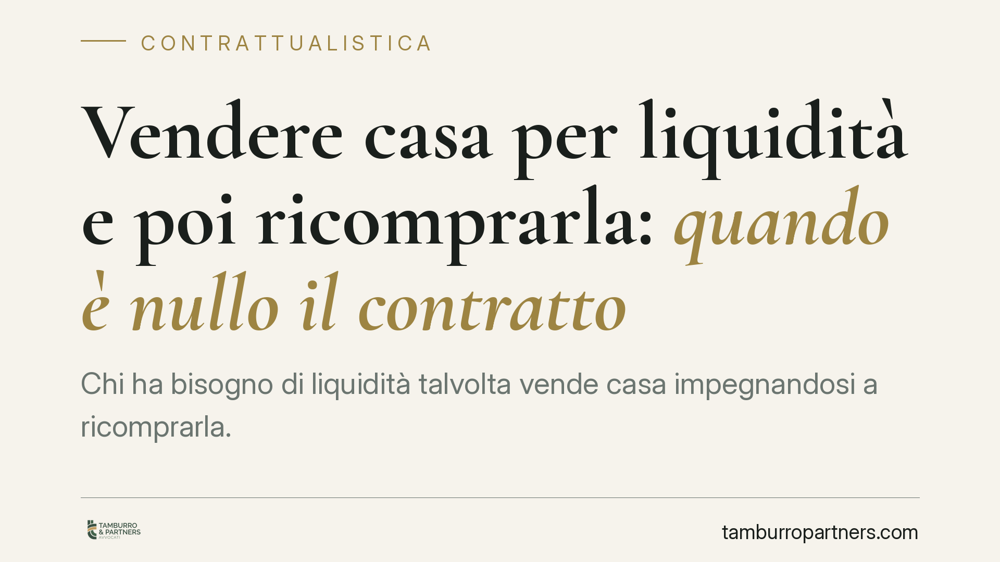

Vendere casa per liquidità e poi ricomprarla: quando è nullo il contratto
Chi ha bisogno di liquidità talvolta vende casa impegnandosi a ricomprarla. Operazione lecita, ma a rischio: se nasconde un prestito garantito dall'immobile, il contratto è nullo per violazione del divieto di patto commissorio. La Cassazione ha chiarito gli indizi che smascherano l'operazione illecita e su chi grava l'onere di provarli.

Il caso tipico
Un proprietario in difficoltà economica vende l'abitazione a chi gli anticipa una somma, con l'intesa — più o meno esplicita — di poterla riacquistare restituendo il denaro. Sulla carta è una vendita; nella sostanza può essere un prestito garantito dall'immobile.
La distinzione non è formale. Dietro lo stesso schema contrattuale possono convivere un'operazione pienamente valida e una radicalmente nulla. Una recente pronuncia della Corte di Cassazione, Sezione II civile, è tornata a tracciare il confine, ricordando gli elementi che il giudice valuta per qualificare l'operazione.
Inquadramento normativo
La vendita con patto di riscatto è disciplinata dagli artt. 1500 e ss. c.c.: il venditore si riserva il diritto di riacquistare la cosa restituendo il prezzo entro un termine. È un contratto lecito, con causa propria di scambio.
Il problema sorge quando questo schema viene piegato a funzione di garanzia. L'art. 2744 c.c. vieta il patto commissorio: è nullo l'accordo con cui si conviene che, in mancanza del pagamento del debito, la proprietà del bene dato in garanzia passi al creditore. La ratio è protettiva: impedire che il creditore approfitti della debolezza del debitore acquisendo un bene di valore spesso superiore al credito.
Quando la vendita maschera un prestito con garanzia reale, la causa del contratto è illecita per contrarietà a norma imperativa. Scattano allora gli artt. 1343 e 1418 c.c.: la nullità è assoluta e insanabile, rilevabile d'ufficio e imprescrittibile.
Gli indizi — e il loro valore presuntivo
La giurisprudenza individua tre segnali che rivelano il prestito mascherato:
- un debito preesistente tra le parti, che la vendita va a "regolare";
- lo stato di difficoltà economica del venditore al momento dell'accordo;
- la sproporzione tra prezzo pattuito e valore reale dell'immobile.
È qui che va colto il punto spesso trascurato. Questi elementi non sono requisiti tassativi, ma presunzioni semplici ai sensi dell'art. 2729 c.c.: il giudice può desumere la natura illecita dell'operazione quando gli indizi sono gravi, precisi e concordanti. Nessuno di essi, isolatamente, è decisivo; è la loro convergenza a far emergere la funzione di garanzia.
Ne discende una conseguenza processuale concreta: l'onere della prova grava su chi eccepisce la nullità, cioè di norma sul venditore che vuole riottenere l'immobile. Non basta lamentare la sproporzione del prezzo; occorre ricostruire l'intero contesto economico dell'operazione.
Non tutto ciò che garantisce è vietato
Il divieto colpisce l'automatismo ablatorio, non ogni forma di garanzia sul bene. Restano legittimi gli schemi che prevedono una procedura di stima e la restituzione dell'eccedenza al debitore.
È il caso del patto marciano, dove, in caso di inadempimento, il bene viene valutato da un terzo e il creditore trattiene solo quanto corrisponde al credito, versando la differenza. Analogamente, il sale and lease back è valido quando risponde a una genuina esigenza di finanziamento d'impresa e non a una funzione elusiva del divieto. La linea di confine è sempre la stessa: tutela del debitore contro l'appropriazione sproporzionata.
Implicazioni pratiche
Per chi vende per fare cassa contando di riacquistare, il rischio è duplice. Se l'operazione viene qualificata come patto commissorio, il contratto è nullo: la vendita non produce effetti, ma cade anche l'intero assetto negoziale, con incertezza sui rapporti restitutori.
Per l'acquirente-creditore, la nullità significa non aver acquistato alcun diritto stabile sull'immobile, pur avendo erogato denaro. L'investimento diventa una posizione da recuperare come credito, senza la garanzia su cui contava.
Cosa fare in concreto
- Verifica la causa reale dell'operazione: se l'obiettivo è ottenere liquidità restituendola in futuro, sei nell'area del finanziamento, non della vendita.
- Documenta la congruità del prezzo con una perizia indipendente: la sproporzione è l'indizio più insidioso.
- Evita di collegare la vendita a un debito preesistente: è il primo elemento che il giudice valuta.
- Valuta strumenti alternativi e leciti, come il patto marciano, che prevedono stima del bene e restituzione dell'eccedenza.
- Fai esaminare la bozza prima della firma: la nullità per patto commissorio è insanabile e non si corregge a posteriori.
Contributo informativo a cura di Tamburro & Partners Avvocati – Avv. Giuseppe Tamburro. Non costituisce parere legale.
Ogni contratto ha il suo equilibrio.
Se vuoi una revisione delle clausole o una redazione su misura, scrivi allo studio. Ti rispondiamo entro un giorno lavorativo.